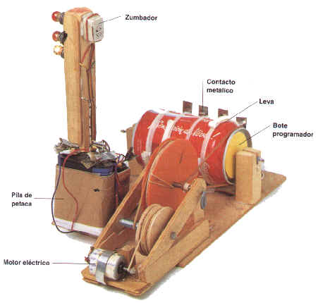
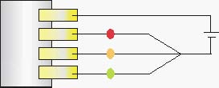
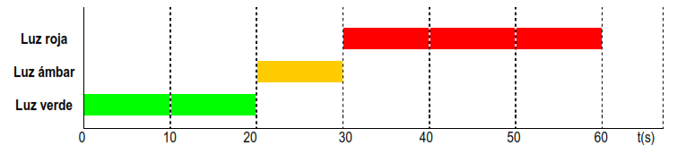

Semáforo con bote programador
Semáforo con bote programador
Con un simple bote metálico (por ejemplo, de un envase de cacao de los que tomamos en el desayuno, o con una lata de refresco) podemos conseguir programar secuencialmente una serie de acciones como encender y apagar luces, parar y arrancar motores...
Puedes ver un montaje de un semáforo en la fotografía de la derecha.
Algunas cosas a tener en cuenta:
- Utilizar un bote metálico con tapa.
- Poner tantos contactos metálicos como efectos deseemos más uno. Puede suprimirse este contacto si ponemos una escobilla (contacto móvil) sobre el eje, que debe ser metálico.
- Cuidar que los contactos toquen siempre la superficie del bote: puede usarse un sistema de gomas elásticas para asegurarnos de ello.
- Tapar con cinta aislante las zonas del bote que nos interesen (en la parte del bote que tocará con los contactos que van a producir los efectos) teniendo cuidado de no tapar ninguna zona del bote que vaya a ser recorrida por el contacto que va directamente a la pila (si estamos empleando una escobilla, no habrá problema siempre que el eje esté libre de pintura).
- Raspar bien el bote y las láminas con la punta de unas tijeras para asegurar que se produzca contacto.
- Debe conseguirse que el bote gire muy despacio: construiremos una buena reductora con poleas o engranajes, o usaremos un motor que la incorpore.
Los circuitos secundarios, destinados a producir los efectos, se montan ahora de forma muy sencilla cortando los cables que, viniendo de las chapas (contactos con el bote) terminan uniéndose, e intercalando los circuitos que queramos entre sus extremos: por ejemplo, si queremos construir un semáforo automático, deberíamos tener 4 contactos (3 para cada bombilla y otro para meter corriente al bote) según el esquema de al lado.
El diagrama de tiempos.
Podemos conseguir una representación gráfica en forma de tabla de lo que van realizando las lámparas de nuestro proyecto. A esto lo llamaremos diagrama de tiempos. Vamos a entender esto un poco mejor si lo aplicamos a un semáforo para vehículos.
Así, en el eje y representaremos las luces disponibles, y en el eje x haremos marcas que nos indicarán el tiempo transcurrido. Por ejemplo, divisiones de 10 en 10 segundos. Veamos cómo queda.
